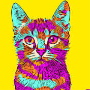

Virtual Pet
Virtual Pet is a console application game that allows the player to create as many pets as they want. You can interact with your pet but don't forget to take care of it!
Hello! Welcome to my portfolio! Allow me introduce myself. I am a software developer who is attending a bootcamp to further my capabilities with C# programming and the many tools used in conjunction to create software or web applications. I enjoy working with computers in general, as I have always had an interest in working with them as a career. I remember choosing my first career goal, or "What do I want to be when I grow up?" in middle school and I chose a "Software engineer Technician". I attended college for computer science, and took an operating systems class, but I was not convinced the path I was on was the right one for me. So I put my 'becoming a computer wizard' ambitions to the side and focused on my job at the time.
Once I began learning the C# programming language, it was now clear to me what I wanted to pursue as a career. I was already on a good first step, thanks to having a really great support system on my side to help me navigate to the right path for me.
Here are a few projects I have created or contributed toward!
Virtual Pet is a console application game that allows the player to create as many pets as they want. You can interact with your pet but don't forget to take care of it!

The blog app will allow you to write your own blog about any category. The app will keep track and organize all of your blogs to view or edit later. Think of this as an app to document or journal anything. It could just be your thoughts about a certain topic, or an idea for a cool project!
MoodPlus is a mood tracker app where you are given the ability to journal your mood daily. The app will ask you what sort of feeling you have and it will track these feelings onto a graph, giving the user a visual representation on what their moods look like on a day to day basis. This app has many features to help people live a more positive lifestyle!